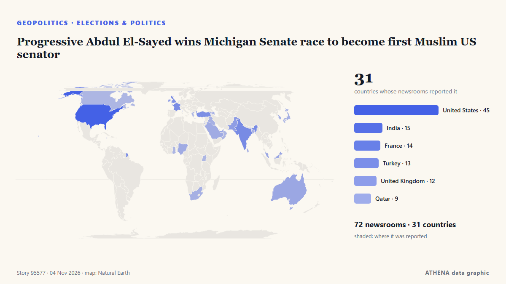

ATHENA Glaux Intelligences — تحليل الأخبار العالمية — كل رقم مُفسَّر
أخبار العالم، مدقّقة عبر الدول
يتابع ATHENA Glaux مئات الوسائل الإعلامية حول العالم ويجمع تقاريرها في أحداث. لكل حدث ترى عدد الوسائل الإعلامية وعدد الدول التي غطته، ومن نشره أولاً، ودرجة خطر مع أسبابها — بتحديث كل 10 دقيقة، وبسبع لغات.
مباشرة من الأخبارProgressive Abdul El-Sayed wins Michigan Senate race to become first Muslim US senator71 مصدرًا · 31 دولة · الخطر 3.2 · المصادر: Mainichi (English), The Hill

الجغرافيا السياسيةProgressive Abdul El-Sayed wins Michigan Senate race to become first Muslim US senator
نشرته 71 مصدرًا في 31 دولة منذ 1 نوفمبر. أول من نشره: Mainichi (English). يقدّر ATHENA الخطر بـ3.2/10 (معتدل)، بثقة 89٪.
تُعرض العناوين بالإنجليزية كما نُشرت.
Trump says US will end military aid to Israel by end of the year
Says democrats, left-wing politicians using US financial support to Israel as a talking point to criticise Republicans. من Express Tribune
US Midterms: Democrats take control of US Congress as voters reject Trump’s Republicans
Democrats have taken control of both chambers of the United States Congress in the November 3, 2026, midterm elections, dealing a major political setback to President Donald Trump and his Republican… من Vanguard

اليوم بالأرقام
| 11:00 | 563 |
|---|---|
| 12:00 | 792 |
| 13:00 | 813 |
| 14:00 | 1061 |
| 15:00 | 696 |
| 16:00 | 1023 |
| 17:00 | 519 |
| 18:00 | 861 |
| 19:00 | 681 |
| 20:00 | 1012 |
| 21:00 | 489 |
| 22:00 | 423 |
| 23:00 | 493 |
| 00:00 | 483 |
| 01:00 | 478 |
| 02:00 | 380 |
| 03:00 | 580 |
| 04:00 | 516 |
| 05:00 | 433 |
| 06:00 | 6 |
| 07:00 | 0 |
| 08:00 | 0 |
| 09:00 | 24 |
| 10:00 | 562 |
خطر أحداث اليوم
Democrats capture Congress in sweeping setback for Trump
Democrats captured majorities in both the Senate and House on Tuesday, scoring sweeping victories that reached deep into Republican strongholds as tens of millions of voters delivered a scathing… من The Korea Times
UK PM Burnham says he is ‘open’ to formal apology for slavery, but rules out reparations
At least 12.5 million Africans were abducted and sold into slavery. من Express Tribune
Melania Trump meets with Russian and Ukrainian representatives at the White House
WASHINGTON: First Lady Melania Trump will host “representatives” of Russia and Ukraine in Washington, the White House said Tuesday, without specifying a date or offering further details about who may… من Business Recorder
الأوسع تغطية
إشارات ناشئة
- ارتفاع مفاجئ · نشطة الآنNajib
- خطر متصاعد · نشطة الآنJordanian officer killed in stabbing attack in Amman
- ارتفاع مفاجئ · نشطة الآنParaguay
- ارتفاع مفاجئ · نشطة الآنOval Office
- ارتفاع مفاجئ · نشطة الآنChile
تحذيرات رسمية
- Red notification for tropical cyclone FOUR-26. Population affected by Category 1 (120 km/h) wind speeds or higher is 1.156 million .Red · GDACS ·
- M 6.1 - Fiji regionM6.1 · USGS ·
- Cyber chief: UK facing AI-powered attacks on critical infrastructure within two yearsadvisory · UK National Cyber Security Centre ·
- M 6.0 - 165 km NW of Port-Olry, VanuatuM6.0 · USGS ·
غرفة الأخبار على تيليغرام
انضم مجاناً إلى مجموعة ATHENA Glaux واحصل على الأخبار فور نشرها هنا:
- الأحداث العاجلة بمخاطر 6 فأكثر
- موجز كل ساعة لأبرز الأحداث
- تحديثات متابعات المخاطر
- الموجز اليومي كل صباح في الساعة 10:00 (بتوقيت أثينا)
- نظرة أسبوعية
- التحذيرات الرسمية والإشارات الناشئة والمخاطر المتصاعدة
اضغط الزر، سيفتح تيليغرام، ثم اضغط انضمام. المنشورات بالإنجليزية؛ يمكنك كتم الصوت أو المغادرة في أي وقت. ليس لديك تيليغرام؟ مجاني على telegram.org.
متابعة المخاطر
المزيد ›المخاطر العالمية — الأسبوع 45، 2026 (2–8 نوفمبر) ›
الجغرافيا السياسية والسياسة والأمن
المزيد ›- الانتخابات والسياسة
Kazakhstan president proposes admitting Russia to Organization of Turkic States
- الانتخابات والسياسة
Amazon still under threat despite Lula win in Brazil: researcher
- الانتخابات والسياسة
‘The Bad Guys Lost’: Abdul El-Sayed Wins Michigan Senate Race
- الانتخابات والسياسة
Israel faces new era of sinking US support after election
الاقتصاد والمال والأسواق
المزيد ›The US$6.3 billion Binance hack is the biggest heist ever – it should be a wake up call for cryptocurrency users
An on-chain tally puts the suspected Binance drain at $5.57 billion across three blockchains, as Tether and Circle froze $1.8 billion. من Decrypt
- التضخم وأسعار الفائدة
Bank Negara holds fire on OPR, hike still in play [WATCH]
- الأسهم وتحركات السوق
Shares plunge in Tokyo, Seoul after US tech rout
- المصارف والائتمان
West Bank: Palestinians harvest olives under Israeli military restrictions
- المصارف والائتمان
Paraguay’s president steps down as banking crisis sows chaos
التجارة والصناعة والبنية التحتية
المزيد ›‘If the plane crashes, so be it’: New wave of bomb hoaxes hits dozens of flights
The highly unusual spate of bomb threats affected nearly 30 flights across Europe in one day, in a dramatic escalation after an initial wave during the week. من The Age
- البناء والبنية التحتية
Key federal panel expected to approve Trump's arch amid court challenge
- الشحن والموانئ
Iran's IRGC says two tankers and tugboat caught fire in Strait of Hormuz
- الشحن والموانئ
Iran's IRGC says two tankers and tugboat caught fire in Strait of Hormuz
- الطيران والسكك والطرق
Bomb Threats Disrupt 25 Flights Across Europe, Including Greece
الطاقة والموارد والبيئة
المزيد ›Mother, daughter killed in suspected grizzly bear attack in Canada
2 women were reported missing after they failed to return from afternoon walk, says media report. من Anadolu Agency (English)
- المناخ والسياسات المناخية
90 mil. displaced people at risk from climate threats, UN refugee agency says
- الطقس المتطرف والكوارث الطبيعية
Australia to join Indonesia’s wildfire waterbombing operations
- المناخ والسياسات المناخية
China sees fastest emissions drop since COVID-19 due to Mideast war: report
- النفط والغاز
Brent crude oil price exceeds $100
التكنولوجيا والذكاء الاصطناعي والأمن السيبراني
المزيد ›Parents Sue Google Over AI Chatbot's Role In Teen's Suicide Planning
Parents say they were alerted after school software flagged a document Emma wrote about her funeral plans, according to the lawsuit. من NDTV
- الأمن السيبراني
US warns of 'ongoing cyber threat' to industrial refrigeration systems
- الرقائق والحوسبة
Nvidia CEO Jensen Huang drops from world’s top 10 richest after chips sell-off
- الروبوتات والأتمتة
China blocks SoftBank's $5.4bn deal for ABB robotics division
- الذكاء الاصطناعي
3 Charged in Scheme to Use AI to Impersonate CEOs and Attorneys to Steal $129 Million
الأعمال والشركات والاستثمار
المزيد ›Lehmann Marine Converts Danube Passenger Vessel to Fully Electric
Lehmann Marine, a Sunlight Group company, has converted the MS SISSI passenger ship to fully electric from traditional diesel in collaboration with operator Donauschifffahrt Wurm & Noé and OSWAG… من MarineLink
- استراتيجيات الشركات
New York Times In Advanced Talks To Buy Letterboxd For Reported $330 Million
- القطاعات ومخاطر الشركات
Australia’s oldest department store, David Jones, folds after 188 years
- رأس المال الجريء والتمويل
Zipline raises $1.5bn at $21.5bn valuation as Walmart adds 300 drone sites
- استراتيجيات الشركات
Beef Giant JBS Faces Laundering Complaints
الصحة والعلوم والبحث
المزيد ›Pope Leo readies for 'intense' South America homecoming
Pope Leo to undertake one of the most ambitious papal foreign trips in decades, touring Uruguay, Argentina and his adopted homeland Peru. من Buenos Aires Times
- الإنجازات العلمية
Democratic victories bring historic breakthroughs for women and minorities
- البحث الطبي
A still-recovering pope will head home to Latin America and his beloved Peru for a 12-day trip
- الاكتشافات العلمية
Scientists find signs of red blood cells and collagen in dinosaur fossils
- الاكتشافات العلمية
Ancient coins suggest influential Iron Age king was female
المجتمع والقانون والسياسات العامة
المزيد ›France workers strike, march for ‘dignified wage’
Striking workers marched across France against the rising cost of living on Thursday, with hundreds of thousands of people expected to take to the streets nationwide in a new escalation following… من Vanguard
- المحاكم والقضاء
California governor commutes sentences for state’s 548 death row inmates
- الجريمة والفساد
Court grants ex-Malaysian PM Najib house arrest after $12m royal pardon
- المحاكم والقضاء
Hong Kong activist Joshua Wong given another 10 years
- المحاكم والقضاء
#SHOWBIZ: Russell Brand guilty of rape, three sexual assaults
الرياضة
المزيد ›Mass brawl sparks record 53 red cards in Brazilian under-20s match
The referee sent off 43 players, eight coaching staff and two board members after goal celebrations and taunting descended into complete chaos. من Free Malaysia Today
- الرياضات الأمريكية
Victor Wembanyama scores career-high 52 points and 24 rebounds in Spurs win
- كرة القدم
Cristiano Ronaldo brings his international football career to an end
- الألعاب الأولمبية ورياضات أخرى
Australian T20 star Chris Lynn banned for cocaine use
- كرة القدم
Japan FA honorary president Tashima to challenge Infantino for FIFA presidency
الثقافة والشخصيات وأسلوب الحياة
المزيد ›Italian chef sacked for refusing to put pineapple on pizza, says it insulted his culture
An Italian chef in Australia has lost an unfair dismissal claim after being sacked for, among other workplace issues, refusing to serve ham and pineapple pizza, describing the topping as an insult to… من Vanguard